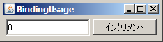
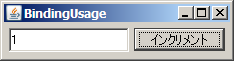

S2Swing
S2Swing
S2Swing
S2Swing
このページの内容に対応するソースコードは、s2swing-tutorialアーカイブのbindingパッケージ以下にあります。
ここでは、Binderクラスを使用して、モデルとビューをバインディングする方法を学習します。
JSR 295のBeans Bindingは、複数のJavaBeansの間でプロパティを同期するAPIです。 Beans Bindingを使うと、モデルオブジェクトの変更をただちにSwingコンポーネントの表示に反映したり、逆にSwingコンポーネントへの入力結果を 即座にモデルオブジェクトに代入することが簡単に実現できるようになります。
S2Swingでは、Beans Bindingをベースとして、さらに簡潔にバインディングを記述できるようになっています。 またバインディングに、強力なバリデーションとコンバータの機構を組み込むことが可能です。
モデルクラスの例として、Counterクラスを作成しましょう。Counterクラスはint型のcountプロパティを持つ、いわゆるPOJO(Plain Old Java Object)クラスです。
package binding;
import java.io.Serializable;
public class Counter implements Serializable {
private static final long serialVersionUID = 1L;
private int count;
public int getCount() {
return count;
}
public void setCount(int count) {
this.count = count;
}
}
Beans Bindingでは、バインディング対象となるモデルクラスにPropertyChangeEventの通知機構が必要ですが、S2Swingでは必要ありません。
次に、CounterオブジェクトをSwingコンポーネントから操作するフレームとして、BindingUsageFrameクラスを作成しましょう。 このフレームでは、テキストフィールド内にカウンタの数値が表示されます。また、ボタンをクリックするたびにカウンタがインクリメントされます。
package binding;
import java.awt.Container;
import java.awt.Dimension;
import java.awt.FlowLayout;
import javax.swing.JButton;
import javax.swing.JTextField;
import org.seasar.swing.annotation.ActionTarget;
import org.seasar.swing.annotation.S2Action;
import org.seasar.swing.beans.ObservableBeans;
import org.seasar.swing.binding.Binder;
import org.seasar.swing.component.S2Frame;
public class BindingUsageFrame extends S2Frame {
private static final long serialVersionUID = 1L;
private JTextField textField = new JTextField();
@ActionTarget("increment")
private JButton button = new JButton();
private Counter counter;
public void initialize() {
setDefaultCloseOperation(EXIT_ON_CLOSE);
textField.setPreferredSize(new Dimension(120, 24));
Container c = getContentPane();
c.setLayout(new FlowLayout());
c.add(textField);
c.add(button);
counter = ObservableBeans.create(Counter.class);
Binder binder = new Binder();
binder.add(counter, "count", textField, "text");
binder.bind();
}
@S2Action
public void increment() {
counter.setCount(counter.getCount() + 1);
}
}
33行目で、ObservableBeans.create()メソッドを使ってCounterオブジェクトを作成しているところに注目してください。 ObservableBeans.create()は、「監視可能」なPOJOオブジェクトを生成するためのメソッドです（内部的には、AOPでsetterメソッドをエンハンスしています）。 POJOオブジェクトを双方向のバインディング対象とする場合は、必ずこのメソッドを使用する必要があります。
35行目からは、Binderオブジェクトを作成し、バインディングを行っています。 36行目のadd()メソッドは、counterオブジェクトのcountプロパティと、textFieldコンポーネントのtextプロパティの双方向バインディングを指示しています。 37行目のbind()メソッドで、実際にバインディングを開始しています。
41行目以降、ボタンのクリックに対応するincrement()メソッドでは、counterオブジェクト側のgetterとsetterを呼び出して、カウンタをインクリメントしています。
なお、このクラスに対応するbinding/resources/BindingUsageFrame.propertiesファイルは以下のように作成します。
title = BindingUsage increment.Action.text = インクリメント
それでは、BindingUsageアプリケーションを実行してみましょう。

ボタンをクリックすると、（ソースコード中ではcounterオブジェクトしか操作していないにも関わらず）テキストフィールドの値が正しく更新されます。 また、画面上でテキストフィールドを直接、別の数値で書き換えてからボタンをクリックすると、UI側での値の変更が正しくcounterオブジェクトに伝わっていることが確認できます。
